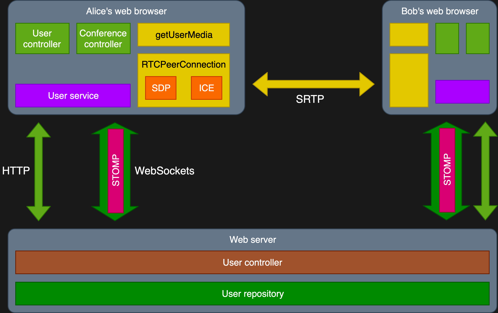

WebRTC
Real-time communication for web browsers and mobile apps
Presented by Marc Plouhinec for the
SZJUG.
Marc Plouhinec
- Passionate full-stack engineer
- 11 years of professional experience
- Currently working at Lazada (Alibaba Group)
- m_plouhinec@yahoo.fr
- https://github.com/marcplouhinec
What is WebRTC?
Use cases
- Conference call (audio, video)
- Games
- Remote desktop
- Local file sharing
- Video on demand
- Shared document edited by multiple users
Low latency?
- Peer-to-peer connection
- Protocol optimized for low-latency
Demo
Allow users to find each others and make a video call.
Demo architecture
Local deployment
First try
Only works locally with Firefox.
Local deployment
With HTTPS

Local deployment
With a STUN / TURN server
Cloud deployment
Cloud deployment (HA)
More?
Useful links
- Great documentation about WebRTC: https://developer.mozilla.org/en-US/docs/Web/API/WebRTC_API
- Detailed explanations about the APIs and protocols: https://hpbn.co/webrtc/
- Demo source code: https://github.com/marcplouhinec/webrtcdemo